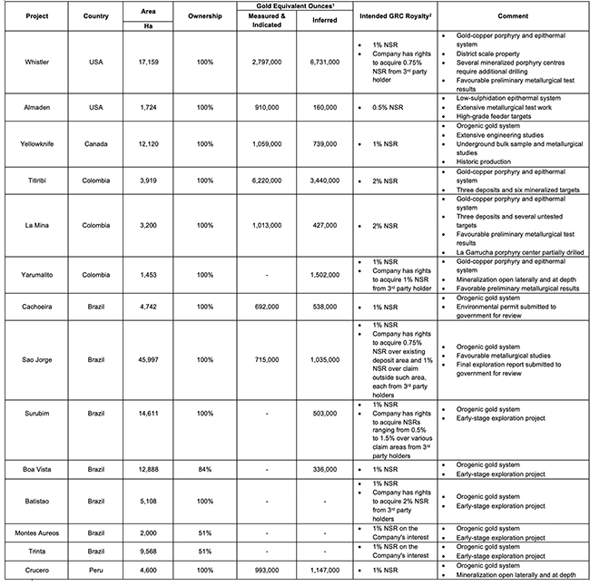

|
URL: http://goldmining.com/news/index.php?content_id=386&page_number=1
Highlights:
- Creation of Gold Royalty Corp. (GRC), a new and wholly owned gold-focused royalty company, to expose existing shareholders to an additional and distinct form of value enhancement;
- Portfolio to include 14 newly created royalties comprised of 2% NSRs on 2 gold projects, 1% NSRs on 11 gold projects, and a 0.5% NSR on 1 gold project (Table 1);
- 11 of the 14 NSRs are associated with advance-stage resource and development projects with exposure to the following aggregated resources (Table 2):
- 11.4 Moz gold (14.3 Moz gold equivalent) in the measured and indicated categories; and
- 13.8 Moz gold (16.6 Moz gold equivalent) in the inferred category;
- GRC will retain exposure to future discoveries through its precious metal focused portfolio covering over 1,290 km2 (139,000 Ha) in mining friendly jurisdictions in five countries in the Americas; and
- Additional opportunities to expand royalty portfolio through buy-backs of existing NSR royalties ranging from 0.5% to 2% from third-party holders on up to 5 of the 14 projects.
Vancouver, British Columbia – June 24, 2020 – GoldMining Inc. (the "Company" or "GoldMining") (TSX: GOLD; OTCQX: GLDLF) is pleased to announce today the creation of Gold Royalty Corp. ("GRC"), a newly incorporated wholly owned subsidiary, that will hold 14 newly created net smelter return ("NSR") royalties on its extensive gold-focused asset portfolio in the Americas.
Amir Adnani, Chairman, commented: "Following a decade-long effort since forming the Company to assemble an extensive portfolio of gold projects in mining friendly jurisdictions in North and South America, we believe that the timing is right to create this royalty entity, which imparts an additional, and non-dilutive layer, of value to existing shareholders. Over the long-term, we intend to explore potential value-enhancing transactions for Gold Royalty Corp., including a potential spin-off, initial public offering, sale, merger or other transactions that may increase shareholder value."
Garnet Dawson, CEO, commented: "GoldMining's focus remains on our two-pronged strategy of expanding our property portfolio through accretive transactions of resource stage gold projects and their advancement towards development. We believe Gold Royalty Corp. will be a complementary platform to GoldMining's future acquisition and development plans."
GRC's royalty portfolio is expected to comprise of 0.5% to 2.0% NSR royalties on the Company's interest in 14 existing projects with the opportunity to expand the royalty portfolio through the Company's buy-back rights on existing NSR royalties ranging from 0.5% to 2% held by third-parties on up to 5 of the 14 projects (Table 1).
Table 1: GRC Royalty Portfolio

1 Further details regarding individual resource estimates, including metal equivalents, are shown in Table 2.
2 Option to purchase existing third-party royalties on individual projects are detailed in their respective technical report.
Qualified Persons
Paulo Pereira, President of GoldMining Inc. has reviewed and approved the technical information contained in this news release. Mr. Pereira holds a Bachelors degree in Geology from Universidade do Amazonas in Brazil, is a Qualified Person as defined in NI 43-101 and is a member of the Association of Professional Geoscientists of Ontario.
About GoldMining Inc.
GoldMining Inc. is a public mineral exploration company focused on the acquisition and development of gold assets in the Americas. Through its disciplined acquisition strategy, GoldMining now controls a diversified portfolio of resource-stage gold and gold-copper projects and royalties in Canada, U.S.A., Brazil, Colombia and Peru. Additionally, GoldMining owns a 75% interest in the Rea Uranium Project, located in the Western Athabasca Basin of Alberta, Canada.
Table 2: GoldMining's Aggregated Mineral Resource Statement across all its Projects1,2,3.
| Deposit |
Cut-off4
(g/t) |
Tonnage
(Mt) |
Grade |
Contained Metal |
Gold
(g/t) |
Silver
(g/t) |
Copper
(%) |
Gold Eq
(g/t) |
Gold
(Moz) |
Silver
(Moz) |
Copper
(Mlbs) |
Gold Eq
(Moz) |
| Measured Resources |
| Titiribi5 |
0.3 |
51.600 |
0.49 |
- |
0.17 |
0.78 |
0.820 |
- |
195.1 |
1.290 |
| Yellowknife13 |
0.5/1.5 |
1.176 |
2.10 |
- |
- |
2.10 |
0.080 |
- |
- |
0.080 |
| Total |
|
|
|
|
|
|
0.900 |
- |
195.1 |
1.370 |
| Indicated Resources |
| Titiribi5 |
0.3 |
234.200 |
0.51 |
- |
0.09 |
0.65 |
3.820 |
- |
459.3 |
4.930 |
| Sao Jorge6 |
0.3 |
14.420 |
1.54 |
- |
- |
1.54 |
0.715 |
- |
- |
0.715 |
| Cachoeira7 |
0.35 |
17.470 |
1.23 |
- |
- |
1.23 |
0.692 |
- |
- |
0.692 |
| Whistler8 |
0.3 |
110.280 |
0.50 |
1.76 |
0.14 |
0.79 |
1.765 |
6.130 |
343.1 |
2.797 |
| La Mina9 |
0.25 |
28.170 |
0.74 |
1.77 |
0.24 |
1.12 |
0.667 |
1.607 |
150.2 |
1.013 |
| Crucero12 |
0.4 |
30.653 |
1.00 |
- |
- |
1.00 |
0.993 |
- |
- |
0.993 |
| Yellowknife13 |
0.5/1.5 |
12.933 |
2.35 |
- |
- |
2.35 |
0.979 |
- |
- |
0.979 |
| Almaden |
0.3 |
43.370 |
0.65 |
- |
- |
0.65 |
0.910 |
- |
- |
0.910 |
| Total |
|
|
|
|
|
|
10.540 |
7.737 |
952.7 |
12.969 |
| Measured and Indicated Resources |
| Total |
|
|
|
|
|
|
11.440 |
7.737 |
1,147.8 |
14.339 |
| Inferred Resources |
| Titiribi5 |
0.3 |
207.900 |
0.49 |
- |
0.02 |
0.51 |
3.260 |
- |
77.9 |
3.440 |
| Sao Jorge6 |
0.3 |
28.190 |
1.14 |
- |
- |
1.14 |
1.035 |
- |
- |
1.035 |
| Cachoeira7 |
0.35 |
15.667 |
1.07 |
- |
- |
1.07 |
0.538 |
- |
- |
0.538 |
| Whistler8 |
0.3/0.6 |
311.260 |
0.47 |
2.26 |
0.11 |
0.68 |
4.626 |
22.617 |
713.5 |
6.731 |
| La Mina9 |
0.25 |
12.394 |
0.65 |
1.75 |
0.27 |
1.07 |
0.260 |
0.697 |
73.3 |
0.427 |
| Boa Vista10 |
0.5 |
8.470 |
1.23 |
- |
- |
1.23 |
0.336 |
- |
- |
0.336 |
| Surubim11 |
0.3 |
19.440 |
0.81 |
- |
- |
0.81 |
0.503 |
- |
- |
0.503 |
| Crucero12 |
0.4 |
35.779 |
1.00 |
- |
- |
1.00 |
1.147 |
- |
- |
1.147 |
| Yellowknife13 |
0.5/1.5 |
9.302 |
2.47 |
- |
- |
- |
0.739 |
- |
- |
0.739 |
| Yarumalito14 |
0.5 |
66.271 |
0.58 |
- |
0.09 |
0.70 |
1.230 |
- |
129.3 |
1.502 |
| Almaden |
0.3 |
9.150 |
0.56 |
- |
- |
0.56 |
0.160 |
- |
- |
0.160 |
| Total |
|
|
|
|
|
|
13.840 |
23.311 |
993.9 |
16.558 |
Table 2 Notes:
- Mineral resources are not mineral reserves and do not have demonstrated economic viability. There is no certainty that all or any part of the mineral resources will be converted into mineral reserves. The estimate of mineral resources may be materially affected by environmental permitting, legal, title, taxation, sociopolitical, marketing or other relevant issues.
- The above aggregated resource table is provided for informational purposes only and is not intended to represent the viability of any project on a standalone or aggregated basis. The exploration and development of each project, project geology and the assumptions and other factors underlying each estimate, are not uniform and will vary from project to project. Please refer to the technical report for each respective project, as referenced herein, for detailed information respecting each individual project.
- All quantities are rounded to the appropriate number of significant figures; consequently, sums may not add up due to rounding.
- Gold cut-off for all projects except for Whistler and Yarumalito, which is gold equivalent cut-off.
- Notes for Titiribi:
- Based on technical report titled "Technical Report on the Titiribi Project Department of Antioquia, Colombia" prepared by Joseph A. Cantor and Robert E. Cameron of Behre Dolbear & Company (USA), Inc., with an effective date of September 14, 2016.
- Gold equivalent estimated for the Titiribi deposit assumes metal prices of US$1,300/oz gold and US$2.90/lb copper and recoveries of 83% for gold and 90% for copper.
- Notes for Sao Jorge:
- Based on technical report titled "Technical Report and Resource Estimate on the São Jorge Gold Project, Pará State, Brazil" prepared by Porfirio Rodriguez and Leonardo de Moraes of Coffey Mining Pty Ltd. ("Coffey"), with an effective date of November 22, 2013.
- Notes for Cachoeira:
- Based on technical report titled "Technical Report and Resource Estimate on the Cachoeira Property, Pará State, Brazil" prepared by Gregory Z. Mosher of Tetratech, Inc. with an effective date of April 17, 2013 and amended and re-stated October 2, 2013.
- Notes for Whistler:
- Based on technical report titled "Technical Report on the Whistler Project" prepared by Gary Giroux of Giroux Consultants Inc., with an effective date of March 24, 2016.
- The Whistler Project is comprised of three deposits: Whistler, Raintree West and Island Mountain.
- Gold equivalent estimated for the Whistler deposit assumes metal prices of US$990/oz gold, US$15.40/oz silver and US$2.91/lb copper and recoveries of 75% for gold and silver and 85% for copper.
- Gold equivalent estimated for the Raintree West deposit assumes metal prices of US$1,250/oz gold, US$16.50/oz silver and US$2.10/lb copper and recoveries of 75% for gold, 85% for copper and 75% for silver.
- Gold equivalent estimated for the Island Mountain deposit assumes metal prices of US$1,250/oz gold, US$16.50/oz silver and US$2.10/lb copper and recoveries of 75% for gold, 85% for copper and 25% for silver (recovered in copper concentrate).
- A gold equivalent cut-off of 0.3 g/t was highlighted in the estimate as a possible open pit cut-off (Whistler, Raintree-shallow and Island Mountain), and a gold equivalent cut-off of 0.6 g/t was highlighted in the estimate as a possible underground cut-off (Raintree-deep).
- Notes for La Mina:
- Based on technical report titled "Technical Report on the La Mina Project" prepared by Scott E. Wilson of Metals Mining Consultants, Inc. ("MMC") with an effective date of October 24, 2016.
- Gold equivalent estimated for the La Mina project assumes metal prices of US$1,275/oz gold, US$17.75/oz for silver and US$2.75/lb for copper and recoveries of 93% for gold and 90% for copper.
- Notes for Boa Vista:
- Based on technical report titled "Technical Report on the Boa Vista Project and Resource Estimate on the VG1 Prospect, Tapajos Area, Para State, Northern Brazil" prepared by Jim Cuttle, Gary Giroux and Michael Schmulian, with an effective date of November 22, 2013.
- Notes for Surubim:
- Based on technical report titled "Technical Report on the Rio Novo Gold Project and Resource Estimate on the Jau Prospect, Tapajos Area, Para State, Northern Brazil" ("Surubim Project") prepared by Jim Cuttle and Gary Giroux, with an effective date of November 22, 2013.
- Notes for Crucero:
- Pit constrained resource estimate based on US$1,500/oz gold, mining cost of US$1.60/t, processing cost of US$16.00/t and pit slope of 47 degrees.
- Based on technical report titled "Technical Report on the Crucero Property, Carabaya Province, Peru" prepared by Greg Z. Mosher with an effective date of December 20, 2017.
- Notes for Yellowknife:
- Pit constrained resources with reasonable prospects of eventual economic extraction reported above a 0.50 g/t Au cut-off.
- Pit optimization is based on an assumed gold price of US$1,500/oz, metallurgical recovery of 90%, mining cost of US$2.00/t and processing and G&A cost of US$23.00/t.
- Underground resources with reasonable prospects of eventual economic extraction stated as contained within gold grade shapes above a 1.50 g/t Au cut-off.
- Mineral resource tonnage and grade with reasonable prospects of eventual economic extraction are reported as undiluted and reflect a bench height of 3.0 m.
- Based on a technical report titled "Independent Technical Report for the Yellowknife Gold Project, Northwest Territories, Canada" prepared by Ben Parsons (SRK Consulting (U.S.) Inc.) and Dominic Chartier (SRK Consulting (Canada) Inc. and Eric Olin (SRK Consulting (U.S.) Inc.) with an effective date of March 1, 2019.
- Notes for Yarumalito
- Pit constrained resource estimate based on US$1,500/oz gold and US$2.70/lb copper, mining cost of US$2.00/t, processing cost of US$8.00/t and pit slope of 45 degrees.
- Based on technical report titled "Technical Report: Yarumalito Gold-Copper Property, Departments of Antioquia and Caldas, Republic of Colombia" prepared by Greg Z. Mosher with an effective date of April 1, 2020.
- Notes for Almaden
- Pit constrained resource estimate based on US$1,500/oz gold and US$2.70/lb copper, mining cost of US$2.25/t, processing cost of US$10.00/t and pit slope of 45 degrees. 0.3 g/t Au cut-off.
- See News Release titled "GoldMining Announces Resource Estimate for Almaden Gold Project, Idaho, USA" on June 3, 2020, which is available at www.sedar.com under GoldMining's SEDAR profile. A technical report documenting this work is currently in preparation and will be available at www.sedar.com under GoldMining's SEDAR profile in due course.
The above aggregated resource statement is provided for information purposes only. Investors should refer to the underlying technical reports referenced above for project-specific factors relating to each resource estimate.
For additional information, please contact:
GoldMining Inc.
Amir Adnani, Chairman
Garnet Dawson, CEO
Telephone: (855) 630-1001
Email: [email protected]
Forward-looking Statements
This document contains certain forward-looking statements that reflect the current views and/or expectations of GoldMining with respect to its business and future events, including expectations and future plans respecting each of GoldMining's and GRC, business plans and strategies, including expectations and plans regarding future acquisitions and value-enhancing transactions, and resource estimates. Forward-looking statements are based on the then-current expectations, beliefs, assumptions, estimates and forecasts about the business and the markets in which GoldMining including GRC, operates. Investors are cautioned that all forward-looking statements involve risks and uncertainties, including: the ability of the Company to identify and execute additional transactions, including any potential spin-off, sale or merger, on acceptable terms or at all, the ability of the Company to realize or enhance value through its GRC strategy as envisioned, the inherent risks involved in the exploration and development of mineral properties, the uncertainties involved in interpreting drill results and other exploration data, the potential for delays in exploration or development activities, the geology, grade and continuity of mineral deposits, the possibility that future exploration, development or mining results will not be consistent with expectations, accidents, equipment breakdowns, title and permitting matters, labour disputes or other unanticipated difficulties with or interruptions in operations, fluctuating metal prices, unanticipated costs and expenses, and uncertainties relating to the availability and costs of financing needed in the future. These risks, as well as others, including those set forth in GoldMiningꞌs Annual Information Form for the year ended November 30, 2019, management's discussion and analysis for the three months ended February 29, 2020 and other filings with Canadian securities regulators, could cause actual results and events to vary significantly. Accordingly, readers should not place undue reliance on forward-looking statements and information. There can be no assurance that forward-looking information, or the material factors or assumptions used to develop such forward looking information, will prove to be accurate. GoldMining does not undertake any obligations to release publicly any revisions for updating any voluntary forward-looking statements, except as required by applicable securities law.
|